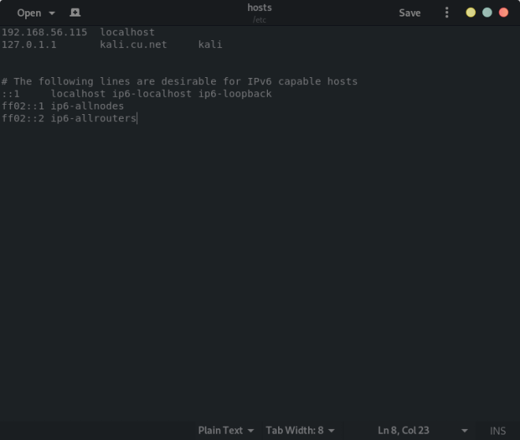
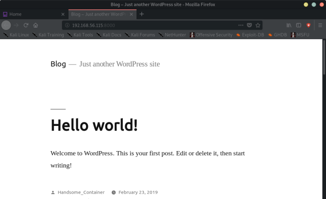
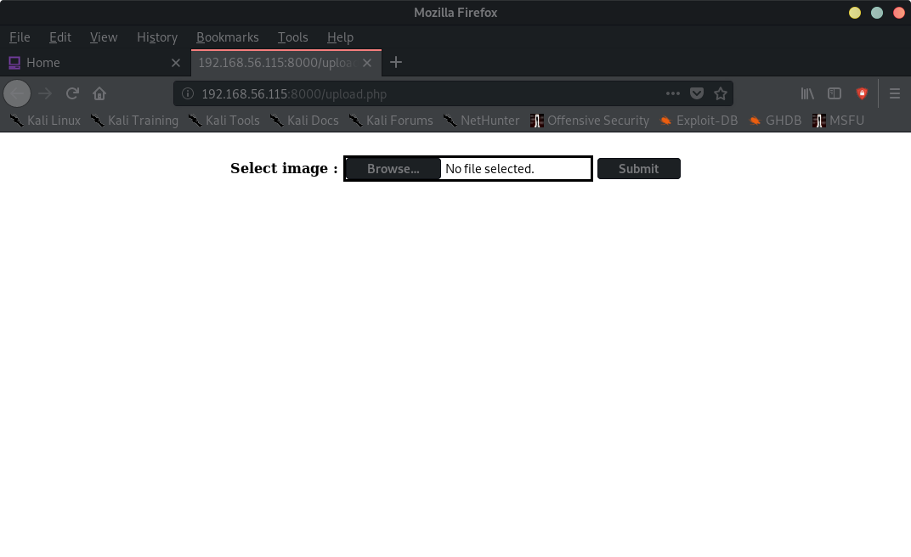
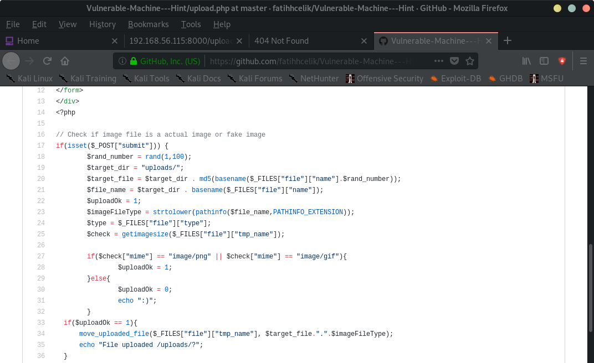

Index
- BasicPenTestingBox
- BasicPenTestingBox2
- bee box
- BossPlayer
- CyberChallenge19
- Dawn
- DC-1
- DC-2
- DC-3
- DerpNStik
- EVM
- Fowsniff
- Gemini Inc 1
- JIS_CTF
- mullidae
- PumpkinFestival
- PumpkinGarden
- PumpkinRaising
- QuaoarCTFHackfest2016
- Rickdiculously Easy
- silky02
- silky1
- Typhoon
- VMS to try
- xss challenges
- Blue
- mr robot
- Unfinished VMS
- CasinoRoyale
- WinterMute Straylight
- connect the dots (unfinished)
- arsenal
- heist
- MyHouse Box
- Sputnik
- Node
- HackInOs
- Seattle
- DC416-Galahad
- Not a Box
- ICE
HackInOs
HackInOS box:Nmap scan report for 192.168.56.115
Host is up (0.00025s latency).
Not shown: 998 closed ports
PORT STATE SERVICE
22/tcp open ssh
8000/tcp open http-alt
MAC Address: 08:00:27:20:A9:BC (Oracle VirtualBox virtual NIC)
root@kali:~# nmap -A -p- 192.168.56.115
Starting Nmap 7.80 ( https://nmap.org ) at 2019-11-10 11:31 EST
Nmap scan report for 192.168.56.115
Host is up (0.00035s latency).
Not shown: 65533 closed ports
PORT STATE SERVICE VERSION
22/tcp open ssh OpenSSH 7.2p2 Ubuntu 4ubuntu2.7 (Ubuntu Linux; protocol 2.0)
| ssh-hostkey:
| 2048 d9:c1:5c:20:9a:77:54:f8:a3:41:18:92:1b:1e:e5:35 (RSA)
| 256 df:d4:f2:61:89:61:ac:e0:ee:3b:5d:07:0d:3f:0c:87 (ECDSA)
|_ 256 8b:e4:45:ab:af:c8:0e:7e:2a:e4:47:e7:52:f9:bc:71 (ED25519)
8000/tcp open http Apache httpd 2.4.25
|_http-generator: WordPress 5.0.3
|_http-open-proxy: Proxy might be redirecting requests
| http-robots.txt: 2 disallowed entries
|_/upload.php /uploads
|_http-server-header: Apache/2.4.25 (Debian)
|_http-title: Blog – Just another WordPress site
MAC Address: 08:00:27:20:A9:BC (Oracle VirtualBox virtual NIC)
Device type: general purpose
Running: Linux 3.X|4.X
OS CPE: cpe:/o:linux:linux_kernel:3 cpe:/o:linux:linux_kernel:4
OS details: Linux 3.2 - 4.9
Network Distance: 1 hop
Service Info: Host: 172.18.0.3; OS: Linux; CPE: cpe:/o:linux:linux_kernel
TRACEROUTE
HOP RTT ADDRESS
1 0.35 ms 192.168.56.115
OS and Service detection performed. Please report any incorrect results at https://nmap.org/submit/ .
Nmap done: 1 IP address (1 host up) scanned in 32.19 seconds
root@kali:~#

Note: localhost:8000
So:



